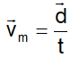
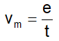
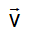
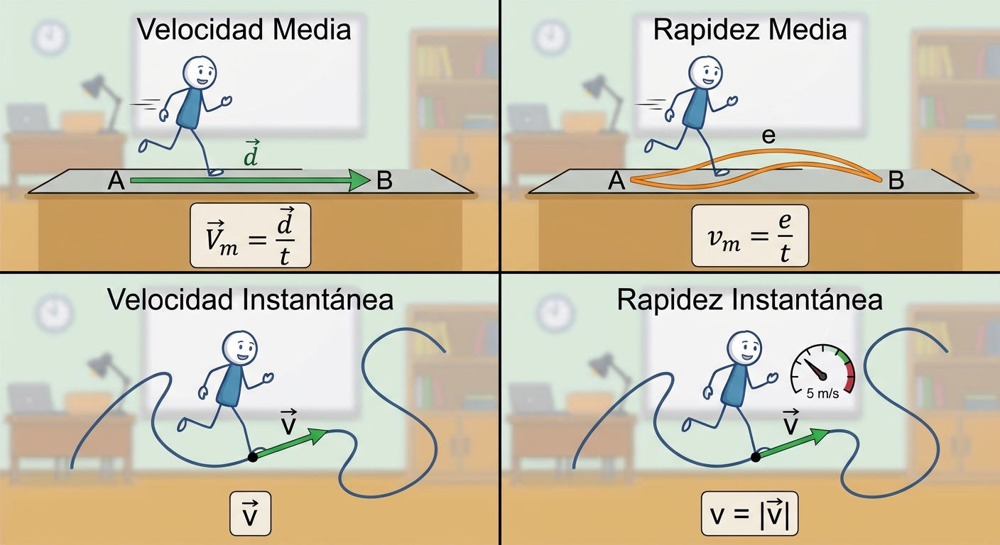

Más definiciones importantes
La velocidad media es el desplazamiento por unidad de tiempo (t) y es un vector:

La rapidez media es el espacio recorrido (e) por unidad de tiempo (t), y no es un vector:

Es lo que comúnmente llamamos "velocidad media" (confundimos estos conceptos).
En realidad, deberíamos decir rapidez media.
La velocidad instantánea, o simplemente velocidad, es la que lleva el objeto en un instante preciso:

Es un vector que va acompañando al objeto y siempre es tangente a su trayectoria.
La rapidez instantánea (v), o simplemente rapidez, es el módulo del vector velocidad instantánea.
Todas las magnitudes anteriores se miden en metros por segundo (m/s) en el Sistema Internacional, aunque con frecuencia usamos kilómetros por hora (km/h).

Imagen generada por IA (Gemini) CC BY-SA 4.0
A ver si lo tenemos claro...
Un objeto se mueve con una velocidad media de (4,-3) m/s durante 6 segundos.
Contesta en menos de 5 minutos si las siguientes afirmaciones son verdaderas o falsas:
00:00: